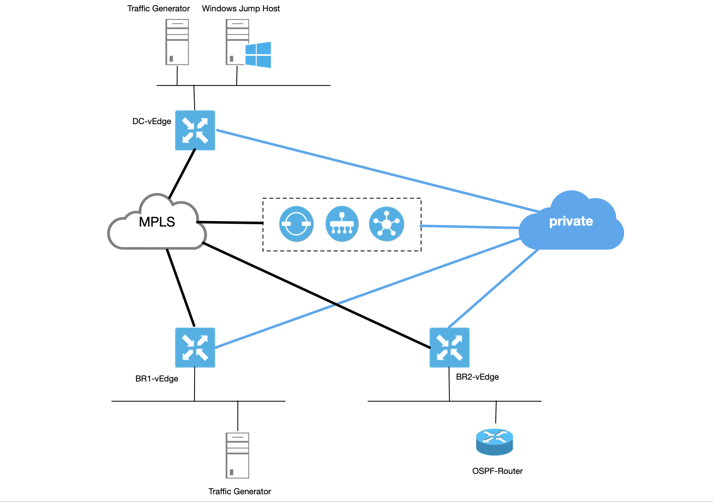
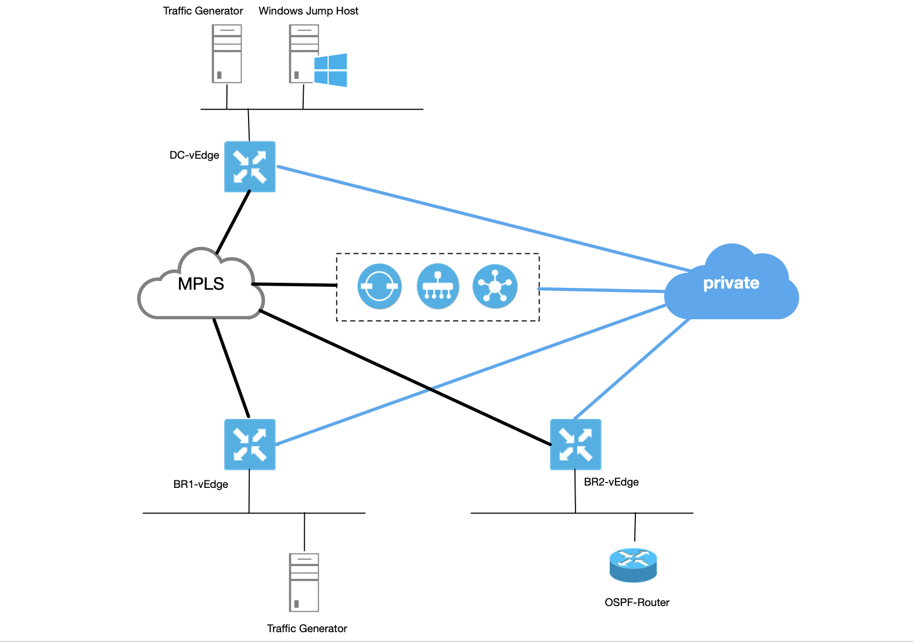

Lab Topology

IP Addressing
| Hostname | IP Address | Credentials |
|---|---|---|
| Windows Jump Station | 198.18.133.36 | administrator/C1sco12345 |
| vManage | 198.18.1.10 | admin/admin |
| vSmart | 198.18.1.12 | admin/admin |
| vBond | 198.18.1.11 | admin/admin |

| Hostname | IP Address | Credentials |
|---|---|---|
| Windows Jump Station | 198.18.133.36 | administrator/C1sco12345 |
| vManage | 198.18.1.10 | admin/admin |
| vSmart | 198.18.1.12 | admin/admin |
| vBond | 198.18.1.11 | admin/admin |